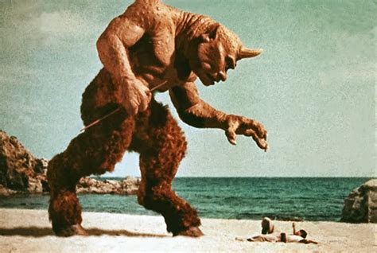

In Greek mythology and later Roman mythology, the Cyclopes (/saɪˈkloʊpiːz/ sy-KLOH-peez; Greek: Κύκλωπες, Kýklōpes, "Circle-eyes" or "Round-eyes"; singular Cyclops /ˈsaɪklɒps/ SY-klops; Κύκλωψ, Kýklōps) are giant one-eyed creatures. Three groups of Cyclopes can be distinguished. In Hesiod's Theogony, they are the brothers Brontes, Steropes, and Arges, who provided Zeus with his weapon the thunderbolt. In Homer's Odyssey, they are an uncivilized group of shepherds, the brethren of Polyphemus encountered by Odysseus. Cyclopes were also famous as the builders of the Cyclopean walls of Mycenae and Tiryns. The fifth-century BC playwright Euripides wrote a satyr play entitled Cyclops, about Odysseus' encounter with Polyphemus. Mentions of the Hesiodic and the wall-builder Cyclopes also figure in his plays. The third-century BC poet Callimachus makes the Hesiodic Cyclopes the assistants of smith-god Hephaestus. So does Virgil in his Latin epic Aeneid, where he seems to equate the Hesiodic and Homeric Cyclopes. From at least the fifth-century BC, Cyclopes have been associated with the island of Sicily and the volcanic Aeolian Islands.
Three groups of Cyclopes can be distinguished: the Hesiodic, the Homeric and the wall-builders. In Hesiod's Theogony, the Cyclopes are the three brothers: Brontes, Steropes, and Arges, sons of Uranus and Gaia, who made for Zeus his characteristic weapon, the thunderbolt. In Homer's Odyssey, the Cyclopes are an uncivilized group of shepherds, one of whom, Polyphemus, the son of Poseidon, is encountered by Odysseus. Cyclopes were also said to have been the builders of the Cyclopean walls of Mycenae and Tiryns. A scholiast, quoting the fifth-century BC historian Hellanicus, tells us that, in addition to the Hesiodic Cyclopes (whom the scholiast describes as "the gods themselves"), and the Homeric Cyclopes, there was a third group of Cyclopes: the builders of the walls of Mycenae.